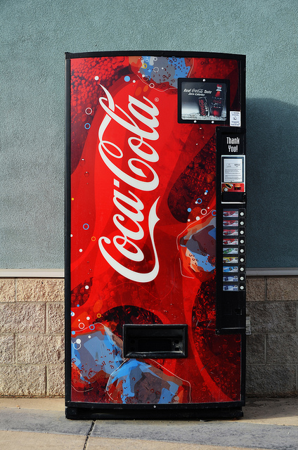
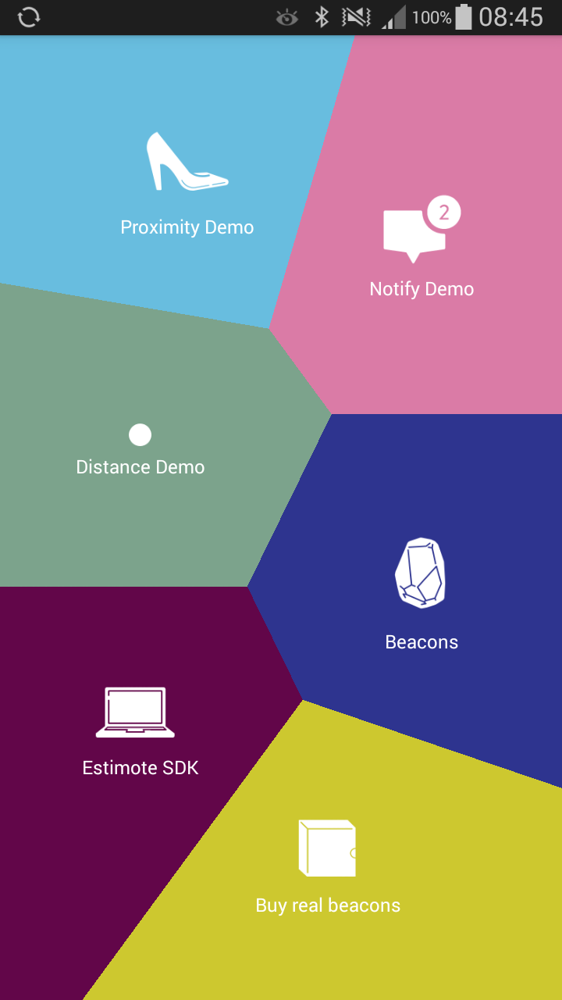

Ankieta
- Imie
- Kierunek
- Androidowy skill
- Jak ze sprzętem
Jak zimne jest twoje...
... piwo?
Agenda
- Wstęp do Internet of things
- Srodowisko
- Co będziemy budować
- Zbudujmy to!
Internet of Things
Internet of Things ...
... is a network of interconnected things ...
... embedded with electronics and sensors ...
... which enables them to achieve greater value and service ...
... by exchanging and analysing data.
Pierwsze zastosowanie
Beacon'y
Dają kontekst
Mają wbudowane sensory
Komunikacja jednokierunkowa
Korzystają z BlueTooth LowEnergy
Estimote stickers
zasięg do ~7m
Wodoodporne
żyją około rok
iBeacon
- Monitorowanie
- Określanie odległości
- UUID, major, minor
Eddystone
- Status beacona
Nearable Protocol
typ
id
pozycja w przestrzeni
ruch w osiach X, Y, Z
temperature
moc sygnału
poziom baterii
firmware
Aplikacja Estimote
Środowisko
Java 1.7
Android Studio
Sdk 23.2
Estimote Sdk
Telefon + BLE + Android 5.1
Estimote Stickers
Activity
public class MainActivity extends Activity {
@Override
protected void onCreate(Bundle savedInstanceState) {
super.onCreate(savedInstanceState);
setContentView(R.layout.activity_main);
}
} 
Fragment
public class BeaconListFragment extends Fragment {
public BeaconListFragment() {
// Required empty public constructor
}
@Override
public View onCreateView(LayoutInflater inflater, ViewGroup container,
Bundle savedInstanceState) {
// Inflate the layout for this fragment
return inflater.inflate(R.layout.fragment_beacon_list, container, false);
}
}
Application
public class ApplicationKYN2016 extends Application {
@Override
public void onCreate() {
super.onCreate();
}
Logger
debug (Log.d)
info (Log.i)
error (Log.e)
verbose (Log.v)
warn (Log.w)
Struktura projektu

Gradle
android {
compileSdkVersion 23
buildToolsVersion "23.0.3"
defaultConfig {
applicationId "com.example.adam.kyn_workshop_2016"
minSdkVersion 21
targetSdkVersion 23
versionCode 1
versionName "1.0"
}
....
dependencies {
compile fileTree(dir: 'libs', include: ['*.jar'])
testCompile 'junit:junit:4.12'
compile 'com.android.support:appcompat-v7:23.2.1'
compile 'com.android.support:design:23.2.1'
compile 'com.estimote:sdk:0.9.4@aar'
} Android Manifest
<?xml version="1.0" encoding="utf-8"?>
<manifest xmlns:android="http://schemas.android.com/apk/res/android"
package="com.workshops.helloworld" >
<uses-permission
android:name="android.permission.SOME_PERMISSION" />
<application
android:allowBackup="true"
android:icon="@mipmap/ic_launcher"
android:labelw="@string/app_name"
android:theme="@style/AppTheme" >
<activity
android:name=".MainActivity"
android:label="@string/app_name" >
<intent-filter>
<action android:name="android.intent.action.MAIN" />
<category android:name="android.intent.category.LAUNCHER" />
</intent-filter>
</activity>
</application>
</manifest>